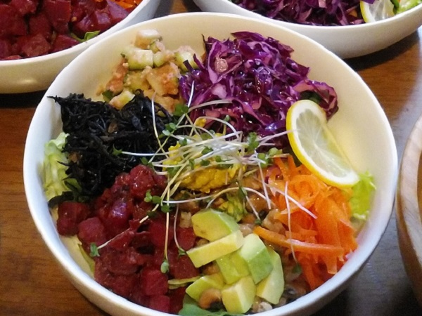
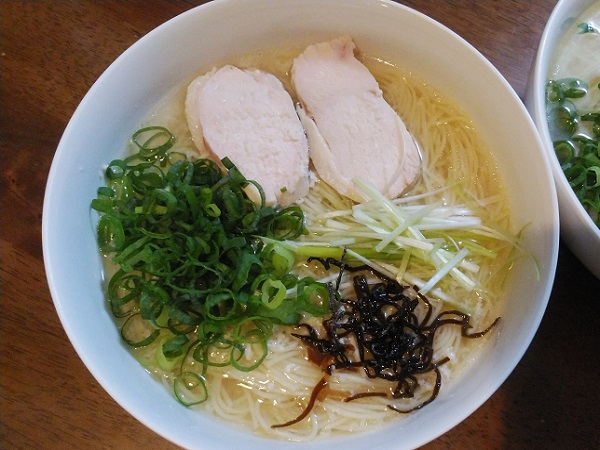

ブッダボウル

ベジタリアン料理として教えていただいたブッダボウルを、自分でアレンジして作ってみた一品です。色がカラフルで綺麗！
・紫キャベツのラペは、塩麹とお酢と燻製オイルを混ぜるだけ。燻製オイルを使うととっても美味しいです！初めて食べたとき感動し、それから何度となく作って毎回舌鼓を打っています。
・紅大根のココナッツオイル炒めは、ココナッツファインと生姜のみじん切りを一緒に炒めて、薄口醤油麹で味付け。あればカレー粉を混ぜても美味しいです。
・大根ときゅうりのトマトドレッシング和えは、1㎝角の大根ときゅうりに、ミキサーで混ぜたドレッシング（トマト、生姜の甘酢漬けの甘酢、濃口の玄米醤油麹）をかけて混ぜるのみ！
・ひじきの黒ゴマ煮は、黒砂糖と薄口醬油麹と水でひじきと千切った乾燥椎茸を煮て、仕上げに擂った黒ゴマを混ぜたもの。
塩麹ラーメン

塩麹で鶏ハムをつくった際に、鶏ハムを茹でた後のスープを何かの料理に使いたいなと思い、塩ラーメンにしたら美味しいのでは？と思いついて作った一品。
・スープは、塩麹鶏ハムのゆで汁に、さらに塩麹を足しただけのシンプルなもの。鶏のだしと塩麹の塩分と旨味だけでもとっても美味しく、透きとおった塩ラーメンのスープが大好きな私にとっては絶品です！
・具材として乗せた塩麹鶏ハムは、塩麹に一晩漬けた鶏ムネ肉をタコ糸で縛って水から茹で、沸騰してから火を止めて、人肌に冷めるまで余熱で加熱しています。それだけでふっくら柔らかい鶏ハムができあがりです♪